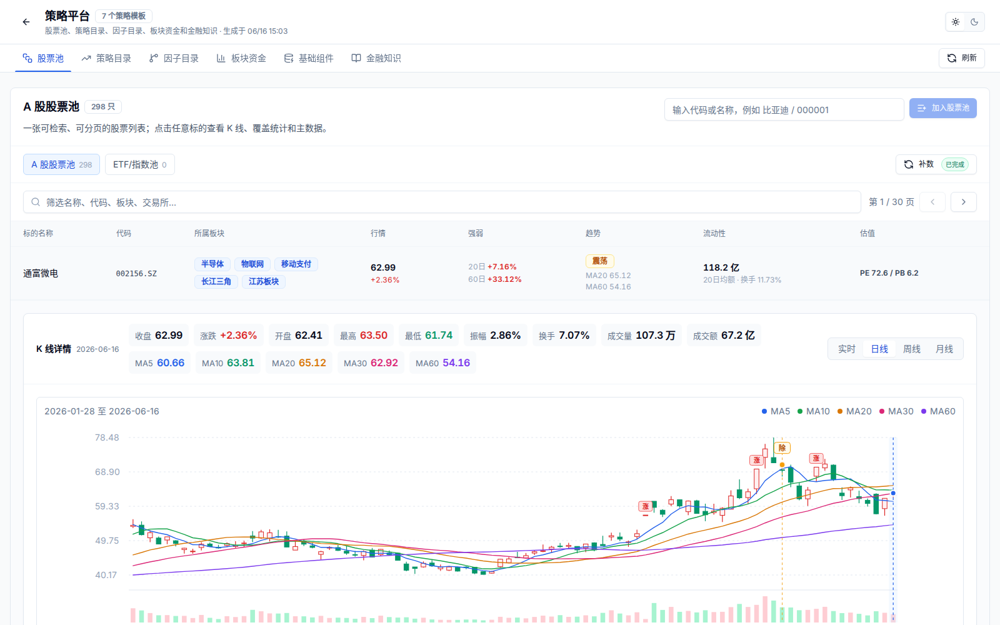
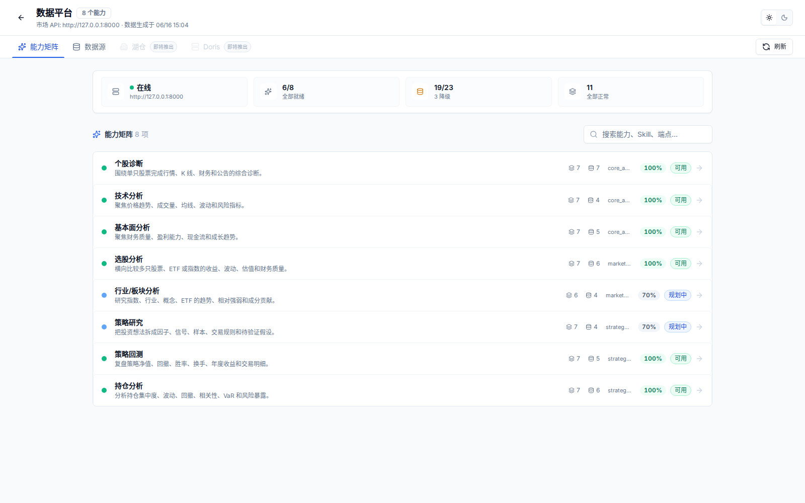
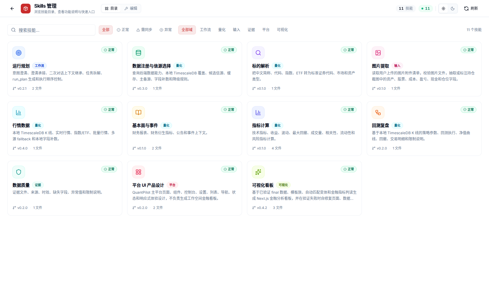
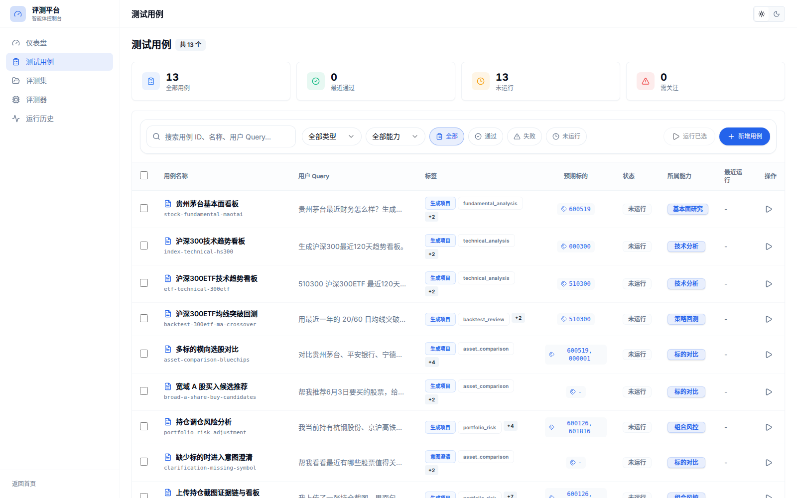
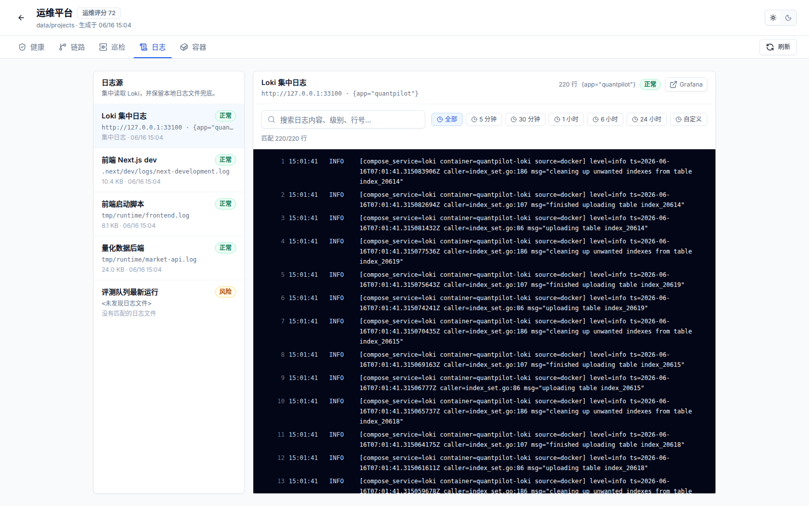
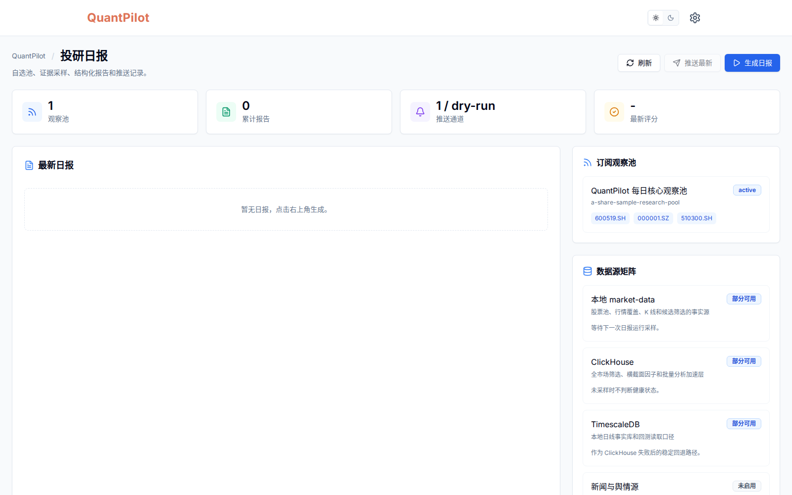

投研 Agent 需要真实数据和验证链路
量化研究不是一次回答就结束。它涉及标的解析、行情/K 线、财务与公告、策略假设、生成代码、可视化结果、运行日志和复盘记录。QuantPilot 的核心目标，是让 Agent 生成结果有数据来源、有质量报告、有评测约束，也能被运维平台追踪。
量化研究不是一次回答就结束。它涉及标的解析、行情/K 线、财务与公告、策略假设、生成代码、可视化结果、运行日志和复盘记录。QuantPilot 的核心目标，是让 Agent 生成结果有数据来源、有质量报告、有评测约束，也能被运维平台追踪。
项目覆盖 Next.js 工作台、Python 市场数据后端、PostgreSQL / TimescaleDB / Redis 数据底座、Agent Runtime、Skills 治理、策略平台、Agent Eval、投研日报、日志中心和运维平台。重点是把复杂能力拆成可操作的产品模块，而不是停留在脚本或单页 demo。







承接用户的自然语言投研问题，完成能力识别、模型选择、附件接收、项目创建、聊天执行和结果预览。
股票池、ETF/指数池、策略目录、因子目录、板块资金、基础组件和金融知识组成投研操作台。
把能力域、数据源、Provider 健康、降级模式、市场 API 和数据契约做成可观察的控制面。
把运行规划、信源选择、标的解析、图片提取、行情数据、数据质量、视觉看板等规则沉淀为技能资产。
维护测试用例、评测集、评测器和运行历史，用例覆盖不同投研能力，避免 Agent 迭代后质量漂移。
Loki 集中日志、本地日志兜底、Docker 容器、workspace 健康、trace 和巡检结果统一进入运维平台。
围绕自选观察池生成证据型日报，沉淀 Markdown / JSON 报告、推送记录和数据源矩阵。
每个任务沉淀 run plan、events、dashboard-data、evidence、validation、repair plan 和视觉检查报告。
首页接收自然语言问题和截图附件，识别能力、标的、时间范围、模型和执行器。
平台按 run plan 调用市场数据后端，从本地 TimescaleDB 和 provider 获取行情、K 线、因子和证据。
Agent 基于 Skills 写入 Next.js 看板、数据文件、来源记录、事件日志、验证报告和修复计划。
平台执行 HTTP、数据、证据、截图、产物契约和 eval 回归检查，失败后进入自动修复链路。
http://localhost:3000 主工作台可访问，策略、日报、运维、数据、评测和 Skills 页面均可打开。http://127.0.0.1:8000/health 返回 status: ok。强化自动修复、视觉质量检查、workspace 契约、stale report 识别和 Agent Eval 覆盖。
继续扩展公告、新闻、舆情、横截面因子、资金流和批量分析能力，而不是只堆页面。
将评测、补数、日报、生成、推送和日志聚合从请求链路拆成更稳定的队列与 worker。